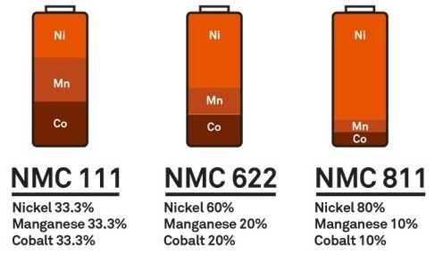
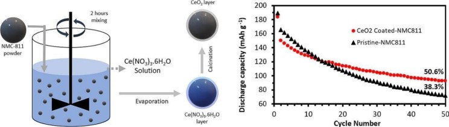
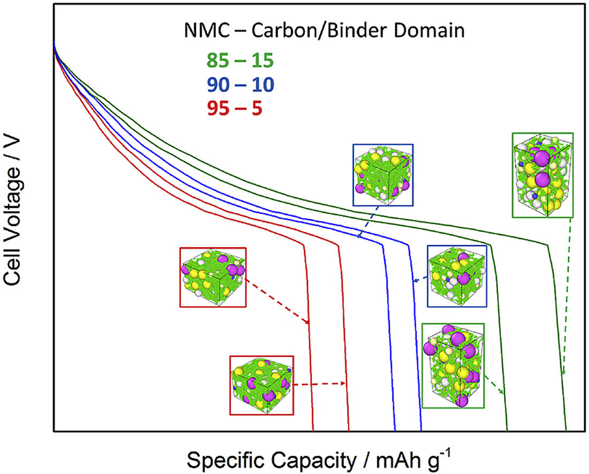

As automakers prioritize energy efficiency and sustainability, nickel-rich batteries are becoming essential in the electric vehicle (EV) market. This silvery-white metal is now one of the most coveted elements for high-performance batteries that can power the future of electric mobility.
In this nickel revolution, high-nickel cathodes, such as those in NMC 811 batteries are taking the lead. These batteries offer higher energy density, reduced weight, and extended driving ranges which are vital consumer needs.
To name a few, top EV brands like Tesla , Volkswagen , Ford Motor Company , and Stellantis are betting on NMC 811 batteries. Notably, these batteries reduce reliance on cobalt- a high-risk material, making them a more sustainable and cost-effective choice for the EV industry.
The Rise of NMC 811: Old vs. New
NMC 811 batteries represent a significant advancement over traditional NMC 111 batteries. While NMC 111 uses an equal ratio of nickel, manganese, and cobalt, NMC 811 boasts 80% nickel content, significantly reducing the reliance on cobalt and manganese. This innovative composition translates to several key advantages:
- Lighter Weight: NMC 811 batteries are approximately 15% lighter than their predecessors.
- Extended Lifespan: These batteries offer a 30% longer lifespan, ensuring greater durability.
- Enhanced Performance: NMC 811 batteries exhibit improved energy density and driving range.
These improvements not only enhance the performance of electric vehicles but also contribute to greater sustainability by minimizing the reliance on cobalt, a resource with significant environmental and ethical concerns.

So, What Sets NMC 811 Batteries Apart?
- High Energy Density: NMC811 batteries boast a significantly higher energy density compared to their predecessors. This means they can store more energy in the same amount of space, leading to longer range and faster charging times for electric vehicles.
- Cobalt Reduction: These batteries use less cobalt, which lowers the risk of supply chain disruptions and makes them more affordable. This is achieved without compromising on battery performance.
- Lighter and More Efficient: These batteries are lighter and last longer, making them more energy-efficient for electric vehicles. This translates to better overall vehicle performance and reduced energy consumption.
Technological Innovations in NMC811 for Fast Charging
- Improvements in Electrode Materials: NMC811 batteries have benefited from advancements in electrode design, allowing for better ion flow during rapid charging cycles. Scientists have optimized the cathode structure to minimize internal resistance, enabling smoother and faster energy transfer.
- Reducing Heat Generation During Charging: One of the key challenges in fast charging is heat generation. With enhanced thermal management systems and advanced electrolytes, NMC811 batteries are now better equipped to handle high currents without overheating, ensuring safety and efficiency.
- Increasing Cycle Life with XFC: Frequent fast charging can degrade battery cells over time. However, improvements in NMC811 chemistry, such as protective coatings on electrodes and enhanced separators, have significantly increased their durability, even under extreme charging conditions.

Real-World Applications and Case Studies
Leading EV Models Using NMC811 Batteries: Many prominent electric vehicle manufacturers, such as Tesla, Hyundai, and BMW, are already leveraging NMC811 technology in their flagship models. These vehicles showcase how fast charging combined with high energy density can revolutionize user experience.
Success Stories in Extreme Fast Charging Deployment: Countries like China, South Korea, and Germany have successfully deployed XFC stations equipped with NMC811-powered EVs. These case studies highlight the reduction in charging times and increased adoption rates of electric mobility.
Future Innovations in NMC811 Technology
- Next-Generation NMC Variants: Researchers are working on NMC90 and NMC95 variants, which will further reduce cobalt usage and boost energy density, making them even more suitable for fast charging.
- Sustainable Production Techniques: Efforts are underway to make NMC811 production greener by adopting closed-loop recycling systems and improving resource extraction efficiency.
- Integration with Smart Charging Infrastructure: The combination of AI-driven smart charging stations with NMC811 batteries will optimize charging schedules, reduce energy waste, and extend battery life.

By 2030, batteries are expected to be the primary driver of nickel demand growth, with consumption reaching a substantial 1.5 million tons. This surge is driven by the increasing dominance of nickel-rich battery chemistries in sustainable battery production, particularly those outside of China. High-nickel batteries, such as NMC 811, are poised to become the cornerstone of the EV industry, significantly boosting demand for nickel.